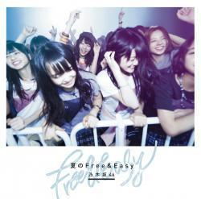
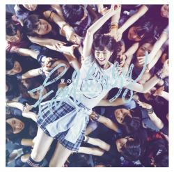

| 2014/06 20 Fri | 個人PVーまひろの定理ー Rotty.♪ |
こんにちわ〜♪♪♪
ろってぃ-orまにだよ

最近、9thのジャケット写真が公開になりましたね !! その時の写真です..*
ななせ・まいまい・ろってぃ-

んぱー

( Nice three shot )
そしてアンダーバージョンのジャケ写がこちら !!

写ったどーバンザーイバンザーイ o(^o^)o
あっ、らりんに「私うつってねーよ！」ってめっちゃ笑顔で突っ込まれそう ♪笑
こちらは ろってぃ-どこに居るか分かりますぅ？

七瀬の左肩あたりにいる人間が私です。
顔の左側 誰かの手で隠れてるのが私です。
いぇい..*
後もう１つ、 かずみの後ろから一生懸命写ろうとしているやつもあるんですよ*´▽`*
￣￣￣￣￣￣￣￣￣￣￣￣￣
そしてそしてっ☆☆☆
個人PV予告編が 公開になりましたね !
是非 ろってぃ-のをチェックお願いします..*
フルでの仕上がりがどの様になっているのか楽しみです.!!
いつもと同じメイクで撮影をしたんですが、
映像的に アイメイクや口の色が濃く見える様に映ってると思います..*笑
だから ろってぃ-メイク濃い !!とか思わんでね

ちなみに、ガリレオを意識した作品です。
ぁぁ、楽しみだ.
ではでは、また更新しますね //
のし。
コメント(153)
2014/06/20 21:24